Sketch.app Advent Calender 2013 24日目の記事です。今回はSketch.appを便利に使える（かもしれない）小ネタをお届けします。
Sketchの基本。というSketch（Sketch 3）の基本操作にフォーカスした電子書籍をリリースしました。詳しくはこちらの「Sketchの基本。」のページをご覧ください。
この記事はSketch 2を元にした記事です。最新版の動作とは異なる可能性が高いため、参考程度にご覧ください。
レイヤーガイドのスナップを無視する
オブジェクトを揃える時は便利なのですが、細かい調整をするときは邪魔になるレイヤーガイドのスナップ。Control＋Lで切り替えできますが、オブジェクトやアンカーポイントのドラッグ中にCommandを押すことで、一時的に無効化できます。
下にあるオブジェクトを選択する
Optionキーを押しながらオブジェクトをクリックすると、下のオブジェクトが選択できます。下のGifアニメーションで、マウスが動いていないのに左のレイヤーリストのフォーカスが変わっているのがわかると思います。
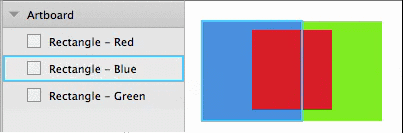
ただし、すでに選択しているオブジェクト上をクリックする場合は、そのオブジェクトの編集モードになります。また、1段階しか選択できないようで、さらにその下にあるオブジェクトは選択することはできないようです。
実のところ、sketchtipsのtumblr（Sketch 2.4: Select under）を初めて知ったのですが、2.4になってからできるようになったみたいですね。前は複製だったので「アレ？」と思ってたら…
回転ツールを使わずに回転する
インスペクタの「Rotate」や［Edit］→［Transform］の「Rotate Layer」（Command＋Shift＋R）を使わずに回転ができます。
バウンディングボックスが出ている状態でCommandキーを押して、角のハンドルにカーソルを持っていくと、カーソルが変わるのでその状態でドラッグすると回転させることができます。
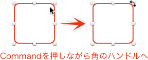
線だけのオブジェクトのハンドリングを改善する
色が入っている部分にヒットエリアがあるため、線だけのオブジェクトって選択やら移動の難易度が高くありませんか？そこで敢えて塗りを設定しそのアルファを0%にしておくと、塗りの部分でも選択・移動ができるようになるので、ストレスが溜まりづらくなります。スタイルリンクを使えば、いざという時も塗りをオフにできるので便利ですね。
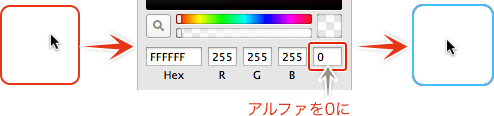
グループをレイヤーのように使う
Sketch.appではオブジェクト＝レイヤーのため、PhotoshopやIllustratorのようにレイヤーでまとめる機能はありません。しかしながら「Click-through when selecting」を使うことで、擬似的なレイヤーを再現できます。
グループ化したオブジェクトを選択し、インスペクタの「Click-through when selecting」にチェックを入れるだけです。これにより、グループ内のオブジェクトをダイレクトに選択できるようになりますので、レイヤーでまとまりを作ることができます。
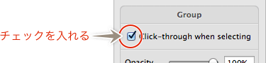
ショートカットのカスタマイズをする
Sketch.app自体にはないのですが、OSのシステム環境設定の「キーボード」から設定することができます。
「キーボード」を選択したら「キーボードショートカットタブ」を選択し、左のリストにある「アプリケーション」を選択します。
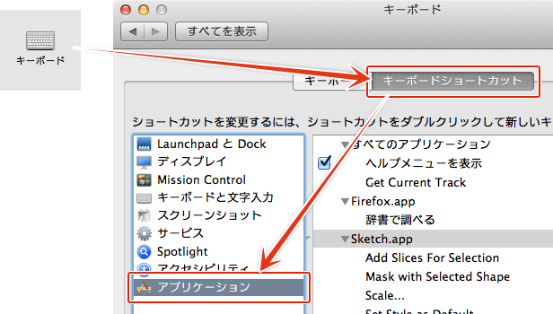
右のリストのすぐ下にある「＋」マークを押し、それぞれ「アプリケーション：Sketch.app」「メニュータイトル：ショートカットを設定したいメニュー名（正確に）」「キーボードショートカット：設定したいキーコンビネーション」で入力し、追加していきます。
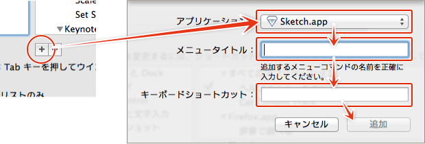
キーコンビネーションでOptionキーを含める場合は、Commandキーを入れておかないと、ショートカットがうまく動かない場合がありますのでので、注意してください。
一応AppleScriptを作ってみました。→システム環境設定にあるキーボードショートカットを設定するAppleScript – Qiita [キータ]
重ね順を意識してコピペする
ペーストする場合、選択しているオブジェクトがあれば、その前面にペーストされます。例えばA（背面）とC（前面）の間にBというオブジェクト入れたい場合は、Aを選択してからペーストするとBが間に入ります。
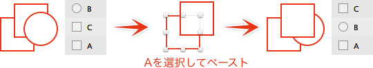
また、選択しているオブジェクトがなければ、最前面にペーストされます。
アートボード on アートボード
アートボードの上にさらにアートボードを作成できます。
アートボードプレビューのウィンドウを出しておくと、アートボードの切り替えだけで、サイズ違いのプレビューを簡単に確認することができます。使いどころが少ないのですが、表示位置が画像の真ん中になるFacebook向けのOGP画像の作成には少し役に立ってます。（私は面倒でやめましたが、共通のヘッダーなどを作成しておき、アートボードのポジションを変更するという使い方もあります）
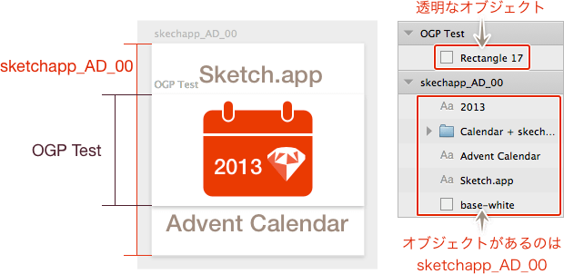
オブジェクト自体は両方のアートボードで共有されません。アートボードのプレビューで表示するには、どちらにも何らかのオブジェクトを置いていく必要があるので、片方のアートボードには透明のオブジェクトを置いておくとよいと思います。
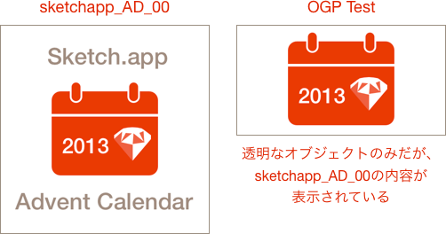
ただ、アートボードの境界にあるドロップシャドウが見えてしまうので、正直実用的ではありません。
また、同じサイズのアートボードを重ねてレイヤーのように使う方法もあります。重ね順の影響を受けにくくはなりますが、アートボードのサイズを変えた場合が面倒なので、グループを使う方が使い勝手が良いと思います…
適当に書いたパスに角丸を付ける
インスペクタの角丸設定は、RectangleかRounded Rectangleで作成されたシェイプでしか表示されません。しかし、パス編集モードにし、コーナーポイントの処理で一番右を選択して数値を入力すれば、角も角丸にすることができます。
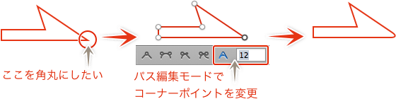
ビットマップの編集
ビットマップを編集モードにすると、選択範囲を作成してコピーや削除などができます。この時に、ビットマップのバウンディングボックスより大きな選択範囲を作成しコピペすると、その選択範囲の大きさでビットマップがペーストされます。透明部分を含んでいる場合は、一度編集モードにしてからEscキーなどで編集モードから抜けると、透明部分を削除したサイズに戻ります。
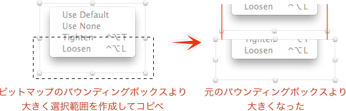
InsertしたPDFが、そのドキュメントサイズで取り込まれますが、同じ方法で透明部分を削除してオブジェクト本来のサイズに戻せます。